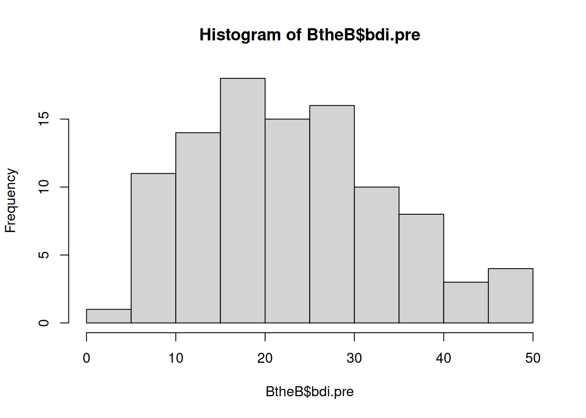
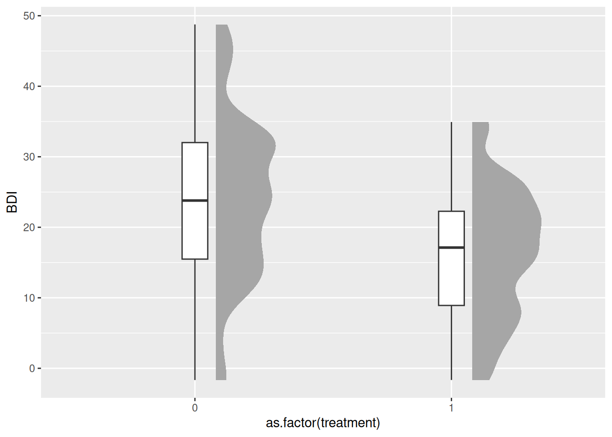
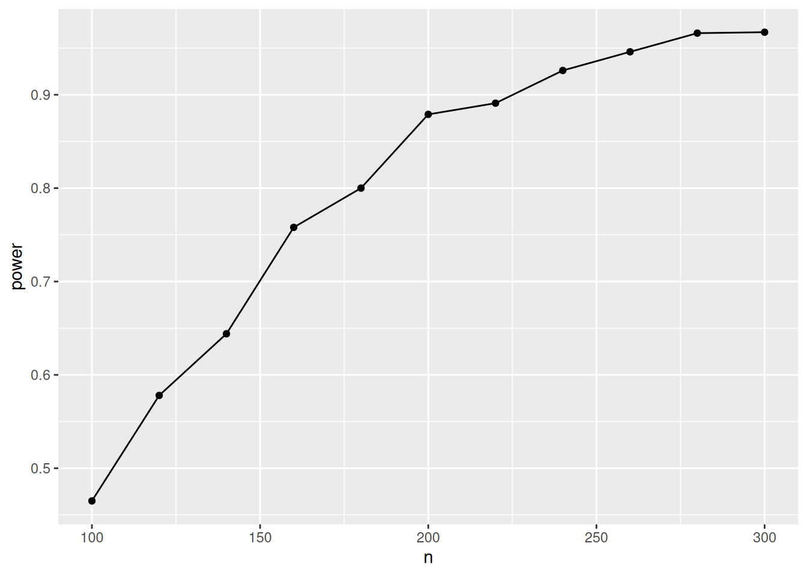

# Preparation: Install and load all necessary packages
#install.packages(c("ggplot2", "ggdist", "gghalves", "pwr", "MBESS"))
library(ggplot2)
library(ggdist)
# library(gghalves)
library(pwr)
library(MBESS)Ch. 1: Linear Model 1: A single dichotomous predictor
Reading/working time: ~50 min.
We start with the simplest possible linear model: (a) a continuous outcome variable is predicted by a single dichotomous predictor. This model actually rephrases a t-test as a linear model! Then we build up increasingly complex models: (b) a single continuous predictor and (c) multiple continuous predictors (i.e., multiple regression).
Data = Model + Error
The general equation for a linear model is:
y = b_0 + b_1*x_1 + b_2*x_2 + ... + e
where y is the continuous outcome variable, b_0 is the intercept, x_1 is the first predictor variable with its associated regression weight b_1, etc. Finally, e is the error term which captures all variability in the outcome that is not explained by the predictor variables in the model. It is assumed that the error term is independently and identically distributed (iid) following a normal distribution with a mean of zero and a variance of \sigma^2:
e \mathop{\sim}\limits^{\mathrm{iid}} N(mean=0, var=\sigma^2)
This assumption of the distribution of the errors is important for our simulations, as we will simulate the error according to that assumption. In an actual statistical analysis, the variance of the errors, \sigma^2, is estimated from the data.
“iid” means that the error of each observation is independent from all other observations. This assumption is violated, for example, when we look at romantic couples. If one partner is exceptionally distressed, then the other partner presumably will also have higher stress levels. In this case, the errors of both partners are correlated and not independent anymore. (See the section on modelling multilevel data for a statistical way of handling such interdependences.)
A concrete example
Let’s fill the abstract symbols of Eq. 1 with some concrete content. Assume that we want to analyze the treatment effect of an intervention supposed to reduce depressive symptoms. In the study, a sample of participants with a diagnosed depression are randomized to either a control group or the treatment group.
We have the following two variables in our data set:
BDIis the continuous outcome variable representing the severity of depressive symptoms after the treatment, assessed with the BDI-II inventory (higher values mean higher depression scores).treatmentis our dichotomous predictor defining the random group assignment. We assign the following numbers: 0 = control group (e.g., a waiting list group), 1 = treatment group.
This is an opportunity to think about the actual scale of our variables. At the end, when we simulate data we need to insert concrete numbers into our equations:
- What BDI values would we expect on average in our sample (before treatment)?
- What variability would we expect in our sample?
- What average treatment effect would we expect?
All of these values are needed to be able to simulate data, and the chosen numbers imply a certain effect size.
Get some real data as starting point
Note
The creators of this tutorial are no experts in clinical psychology; we opportunistically selected open data sets based on their availability. Usually, we would look for meta-analyses – ideally bias-corrected – for more comprehensive evidence.
The R package HSAUR contains open data on 100 depressive patients, where 50 received treatment-as-usual (TAU) and 50 received a new treatment (“Beat the blues”; BtheB). Data was collected in a pre-post-design with several follow-up measurements. For the moment, we focus on the pre-treatment baseline value (bdi.pre) and the first post-treatment value (bdi.2m). We will use that data set as a “pilot study” for our power analysis.
Note that this pilot data does not contain an inactive control group, such as the waiting list group that we assume for our planned study. Both the BtheB and the TAU group are active treatment groups. Nonetheless, we will be able to infer our treatment effect (vs. an inactive control group) from that data by looking at the pre-treatment data.
# the data can be found in the HSAUR package, must be installed first
#install.packages("HSAUR")
# load the data
data("BtheB", package = "HSAUR")
# get some information about the data set:
?HSAUR::BtheB
hist(BtheB$bdi.pre)
The standardized cutoffs for the BDI are:
- 0–13: minimal depression
- 14–19: mild depression
- 20–28: moderate depression
- 29–63: severe depression
Returning to our questions from above:
What BDI values would we expect on average in our sample before treatment?
# we take the pre-score here:
mean(BtheB$bdi.pre)[1] 23.33The average BDI score before treatment was 23, corresponding to a “moderate depression”.
- What variability would we expect in our sample?
var(BtheB$bdi.pre)[1] 117.5163- What average treatment effect would we expect?
# we take the 2 month follow-up measurement,
# separately for the "treatment as usual" and
# the "Beat the blues" group:
mean(BtheB$bdi.2m[BtheB$treatment == "TAU"], na.rm = TRUE)[1] 19.46667mean(BtheB$bdi.2m[BtheB$treatment == "BtheB"])[1] 14.71154Hence, the two treatments reduced BDI scores from an average of 23 to 19 (TAU) and 15 (BtheB). Based on that data set, we can conclude that a typical treatment effect is somewhere between a 4 and a 8-point reduction of BDI scores.1
For our purpose, we compute the average treatment effect combined for both treatments. The average post-treatment score is:
mean(BtheB$bdi.2m, na.rm = TRUE)[1] 16.91753So, the average reduction across both treatments is 23-17=6. In the following scripts, we’ll use that value as our assumed treatment effect.
Enter specific values for the model parameters
Let’s rewrite the abstract equation with the specific variable names. We first write the equation for the systematic part (without the error term). This also represents the predicted value:
\widehat{\text{BDI}} = b_0 + b_1*\text{treatment}
We use the notation \widehat{\text{BDI}} (with a hat) to denote the predicted BDI score.
The predicted score for the control group then simply is the intercept of the model, as the second term is erased by entering the value “0” for the control group:
\widehat{\text{BDI}} = b_0 + b_1*0 = b_0
The predicted score for the treatment group is the value for the control group plus the regression weight:
\widehat{\text{BDI}} = b_0 + b_1*1 Hence, the regression weight (aka. “slope parameter”) b_1 estimates the mean difference between both groups, which is the treatment effect.
With our knowledge from the open BDI data, we insert plausible values for the intercept b_0 and the treatment effect b_1. We expect a reduction of the depression score, so the treatment effect is assumed to be negative. We take the combined treatment effect of the two pilot treatments. And as power analysis is not rocket science, we generously round the values:
\widehat{\text{BDI}} = 23 - 6*treatment
Hence, the predicted value is 23 - 6*0 = 23 for the control group and 23 - 6*1 = 17 for the treatment group.
With the current model, all participants in the control group have the same predicted value (23), as do all participants in the treatment group (17).
As a final step, we add the random noise to the model, based on the variance in the pilot data:
\text{BDI} = 23 - 6*treatment + e; e \sim N(0, var=117)
That’s our final equation with assumed population parameters! With that equation, we assume a certain state of reality and can sample “virtual participants”.
What is the effect size in the model?
Researchers often have been trained to think in standardized effect sizes, such as Cohen’s d, a correlation r, or other indices such as f^2 or partial \eta^2. In the simulation approach, we typical work on the raw scale of variables.
The raw effect size is simply the treatment effect on the original BDI scale (i.e., the group difference in the outcome variable). In our case we assume that the treatment lowers the BDI score by 6 points, on average. Defining the raw effect requires some domain knowledge – you need to know your measurement scale, and you need to know what the values (and differences between values) mean. In our example, a reduction of 6 BDI points means that the average patient moves from a moderate depression (23 points) to a mild depression (17 points). Working with raw effect sizes forces you to think about your actual data (instead of plugging in content-free default standardized effect sizes) and enables you to do plausibility checks on your simulation.
The standardized effect size relates the raw effect size to the unexplained error variance. In the two-group example, this can be expressed as Cohen’s d, which is the mean difference divided by the standard deviation (SD):
d = \frac{M_{treat} - M_{control}}{SD} = \frac{17 - 23}{\sqrt{117}} = -0.55
The standardized effect size always relates two components: The raw effect size (here: 6 points difference) and the error variance. Hence, you can increase the standardized effect size by (a) increasing the raw treatment effect, or (b) reducing the error variance.
Note
If you look up the formula of Cohen’s d, it typically uses the pooled SD from both groups. As we assumed that both groups have the same SD, we simply took that value.
Let’s simulate!
Once we committed to an equation with concrete parameter values, we can simulate data for a sample of, say, n=100 participants. Simply write down the equation and add random normal noise with the rnorm function. Note that the rnorm function takes the standard deviation (not the variance). Finally, set a seed so that the generated random numbers are reproducible:
set.seed(0xBEEF)
# define all simulation parameters and predictor variables:
n <- 100
treatment <- c(rep(0, n/2), rep(1, n/2)) # first 50 control, then 50 treatment
# Write down the equation
BDI <- 23 - 6*treatment + rnorm(n, mean=0, sd=sqrt(117))
# combine all variables in one data frame
df <- data.frame(treatment, BDI)
head(df) treatment BDI
1 0 29.37241
2 0 25.49819
3 0 18.80709
4 0 14.52574
5 0 11.79615
6 0 10.98850tail(df) treatment BDI
95 1 22.14261
96 1 25.40398
97 1 15.76692
98 1 21.04766
99 1 20.15683
100 1 20.68332Let’s plot the simulated data with raincloud plots (see here for a tutorial):
ggplot(df, aes(x=as.factor(treatment), y=BDI)) +
ggdist::stat_halfeye(adjust = .5, width = .3, .width = 0,
justification = -.3, point_colour = NA) +
geom_boxplot(width = .1, outlier.shape = NA) 
# gghalves::geom_half_point(side = "l", range_scale = .4,
# alpha = .5)This graph gives us an impression of the plausibility of our simulation: In the control group, we have a median BDI score of 26, and 50% of participants, represented by the box of the boxplot, are roughly between 18 and 32 points (i.e., in the range of a moderate depression). After the simulated treatment, the median BDI score is at 18 (mild depression).
The plot also highlights an unrealistic aspect of our simulations: In reality, the BDI score is bounded to be >=0; but our random data (sampled from a normal distribution) can generate values below zero. For our current power simulations this can be neglected (as negative values are quite rare), but in real data collection such floor or ceiling effects can impose a range restriction that might lower the statistical power.
Let’s assume that we collected and analyzed this specific sample – what would have been the results?
summary(lm(BDI ~ treatment, data=df))
Call:
lm(formula = BDI ~ treatment, data = df)
Residuals:
Min 1Q Median 3Q Max
-25.7471 -7.7515 0.1853 7.4586 24.6841
Coefficients:
Estimate Std. Error t value Pr(>|t|)
(Intercept) 24.082 1.475 16.328 < 2e-16 ***
treatment -7.649 2.086 -3.667 0.000398 ***
---
Signif. codes: 0 '***' 0.001 '**' 0.01 '*' 0.05 '.' 0.1 ' ' 1
Residual standard error: 10.43 on 98 degrees of freedom
Multiple R-squared: 0.1207, Adjusted R-squared: 0.1117
F-statistic: 13.45 on 1 and 98 DF, p-value: 0.0003985Here, and in the entire tutorial, we assume an \alpha-level of .005, as this provides more reasonable false positive rates and stronger evidence for new claims (Benjamin et al., 2018).
As you can see, in this simulated sample (based on a specific seed), the treatment effect is not significant (p > .02). But how likely are we to detect an effect with a sample of this size?
Doing the power analysis
Now we need to repeatedly draw many samples and see how many of the analyses would have detected the existing effect. To do this, we put the code from above into a function called sim. We coded the function to either return the focal p-value (as default) or to print a model summary (helpful for debugging and testing the function). This function takes two parameters:
ndefines the required sample sizetreatment_effectdefines the treatment effect in the raw scale (i.e., reduction in BDI points)
We then use the replicate function to repeatedly call the sim function for 1000 iterations.
set.seed(0xBEEF)
iterations <- 1000 # the number of Monte Carlo repetitions
n <- 100 # the size of our simulated sample
sim1 <- function(n=100, treatment_effect=-6, print=FALSE) {
treatment <- c(rep(0, n/2), rep(1, n/2))
BDI <- 23 + treatment_effect*treatment + rnorm(n, mean=0, sd=sqrt(117))
# this lm() call should be exactly the function that you use
# to analyse your real data set
res <- lm(BDI ~ treatment)
p_value <- summary(res)$coefficients["treatment", "Pr(>|t|)"]
if (print==TRUE) print(summary(res))
else return(p_value)
}
# now run the sim() function a 1000 times and store the p-values in a vector:
p_values <- replicate(iterations, sim1(n=100))How many of our 1000 virtual samples would have found the effect?
table(p_values < .005)
FALSE TRUE
535 465 Only 46% of samples with the same size of n=100 result in a significant p-value.
46% – that is our power for \alpha = .005, Cohen’s d=.55, and n=100.
Sample size planning: Find the necessary sample size
Now we know that a sample size of 100 does not lead to a sufficient power. But what sample size would we need to achieve a power of at least 80%? In the simulation approach you need to test different ns until you find the necessary sample size. We do this by wrapping the simulation code into a loop that continuously increases the n. We then store the computed power for each n.
set.seed(0xBEEF)
# define all predictor and simulation variables.
iterations <- 1000
ns <- seq(100, 300, by=20) # test ns between 100 and 300
result <- data.frame()
for (n in ns) { # loop through elements of the vector "ns"
p_values <- replicate(iterations, sim1(n=n))
result <- rbind(result, data.frame(
n = n,
power = sum(p_values < .005)/iterations)
)
# show the result after each run (not shown here in the tutorial)
print(result)
}Let’s plot there result:
ggplot(result, aes(x=n, y=power)) + geom_point() + geom_line()
Hence, with n=180 (90 in each group), we have a 80% chance to detect the effect.
🥳 Congratulations! You did your first power analysis by simulation. 🎉
For these simple models, we can also compute analytic solutions. Let’s verify our results with the pwr package – a linear regression with a single dichotomous predictor is equivalent to a t-test:
pwr.t.test(d = 0.55, sig.level = 0.005, power = .80)
Two-sample t test power calculation
n = 90.00212
d = 0.55
sig.level = 0.005
power = 0.8
alternative = two.sided
NOTE: n is number in *each* groupExactly the same result – phew 😅
Sensitivity analyses
Be aware that “pilot studies are next to worthless to estimate effect sizes” (see Brysbaert, 2019, which has a section with that title). When we entered the specific numbers into our equations, we used point estimates from a relatively small pilot sample. As there is considerable uncertainty around these estimates, the true population value could be much smaller or larger. Furthermore, if the very reason for running a study is a significant (exploratory) finding in a small pilot study, your effect size estimate is probably upward biased (because you would have ignored the pilot study if there hadn’t been a significant result).
So, ideally, we base our power estimation on more reliable and/or more conservative prior information, or on theoretical considerations about the smallest effect size of interest. Therefore, we will explore two other ways to set the effect size: safeguard power analysis and the smallest effect size of interest (SESOI).
Safeguard power analysis
As sensitivity analysis, we will apply a safeguard power analysis (Perugini et al., 2014) that aims for the lower end of a two-sided 60% CI around the parameter of the treatment effect (the intercept is irrelevant). (Of course you can use any other value than 60%, but this is the value (tentatively) mentioned by the inventors of the safeguard power analysis.)
Note
If you assume publication bias, another heuristic for aiming at a more realistic population effect size is the “divide-by-2” heuristic. (see kickoff presentation)
We can use the ci.smd function from the MBESS package to compute a CI around Cohen’s d that we computed for our treatment effect:
ci.smd(smd=-0.55, n.1=50, n.2=50, conf.level=.60)$Lower.Conf.Limit.smd
[1] -0.7201263
$smd
[1] -0.55
$Upper.Conf.Limit.smd
[1] -0.377061However, in the simulated regression equation, we need the raw effect size – so we have to backtransform the standardized confidence limits into the original metric. As the assumed effect is negative, we aim for the upper, i.e., the more conservative limit. After backtransformation in the raw metric, it is considerably smaller, at -4.1:
d = \frac{M_{diff}}{SD} \Rightarrow M_{diff} = d*SD = -0.377 * \sqrt{117} = -4.08
Now we can rerun the power simulation with this more conservative value (the only change to the code above is that we changed the treatment effect from -6 to -4.1).
Show the code
set.seed(0xBEEF)
# define all predictor and simulation variables.
iterations <- 1000
ns <- seq(200, 400, by=20) # test ns between 200 and 400
result <- data.frame()
for (n in ns) { # loop through elements of the vector "ns"
p_values <- replicate(iterations, sim1(n=n, treatment_effect = -4.1))
result <- rbind(result, data.frame(
n = n,
power = sum(p_values < .005)/iterations)
)
# show the result after each run
print(result)
} n power
1 200 0.448
2 220 0.466
3 240 0.549
4 260 0.584
5 280 0.646
6 300 0.664
7 320 0.708
8 340 0.744
9 360 0.790
10 380 0.813
11 400 0.822With that more conservative effect size assumption, we would need around 380 participants, i.e., 190 per group.
Smallest effect size of interest (SESOI)
Many methodologists argue that we should not power for the expected effect size, but rather for the smallest effect size of interest (SESOI). In this case, a non-significant result can be interpreted as “We accept the H_0, and even if a real effect existed, it most likely is too small to be relevant”.
What change of BDI scores is perceived as “clinically important”? The hard part is to find a convincing theoretical or empirical argument for the chosen SESOI. In the case of the BDI, luckily someone else did that work.
The NICE guidance suggest that a change of >=3 BDI-II points is clinically important.
However, as you can expect, things are more complicated. Button et al. (2015) analyzed data sets where patients have been asked, after a treatment, whether they felt “better”, “the same” or “worse”. With these subjective ratings, they could relate changes in BDI-II scores to perceived improvements. Hence, even when depressive symptoms were measurably reduced in the BDI, patients still might answer “feels the same”, which indicates that the reduction did not surpass a threshold of subjective relevant improvement. But the minimal clinical importance depends on the baseline severity: For patients to feel notably better, they need more reduction of BDI-II scores if they start from a higher level of depressive symptoms. Following from this analysis, typical SESOIs are higher than the NICE guidelines, more in the range of -6 BDI points.
For our example, let’s use the NICE recommendation of -3 BDI points as a lower threshold for our power analysis (anything larger than that will be covered anyway).
Show the code
set.seed(0xBEEF)
# define all predictor and simulation variables.
iterations <- 1000
# CHANGE: we adjusted the range of probed sample sizes upwards, as the effect size now is considerably smaller
ns <- seq(600, 800, by=20)
result <- data.frame()
for (n in ns) {
p_values <- replicate(iterations, sim1(n=n, treatment_effect = -3))
result <- rbind(result, data.frame(
n = n,
power = sum(p_values < .005)/iterations)
)
print(result)
} n power
1 600 0.728
2 620 0.738
3 640 0.756
4 660 0.781
5 680 0.791
6 700 0.791
7 720 0.827
8 740 0.820
9 760 0.852
10 780 0.866
11 800 0.871Hence, we need around 700 participants to reliably detect this smallest effect size of interest.
Did you spot the strange pattern in the result? At n=720, the power is 83%, but only 82% with n=740? This is not possible, as power monotonically increases with sample size. It suggests that this is simply Monte Carlo sampling error – 1000 iterations are not enough to get precise estimates. When we increase iterations to 10,000, it takes much longer, but gives more precise results:
Show the code
set.seed(0xBEEF)
# define all predictor and simulation variables.
iterations <- 10000
ns <- seq(640, 740, by=20)
result <- data.frame()
for (n in ns) {
p_values <- replicate(iterations, sim1(n=n, treatment_effect = -3))
result <- rbind(result, data.frame(
n = n,
power = sum(p_values < .005)/iterations)
)
print(result)
} n power
1 640 0.7583
2 660 0.7758
3 680 0.7865
4 700 0.8060
5 720 0.8192
6 740 0.8273Now power increases monotonically with sample size, as expected.
To explore how many Monte Carlo iterations are necessary to get stable computational results, see the bonus page Bonus: How many Monte Carlo iterations are necessary?
Recap: What did we do?
These are the steps we did in this part of the tutorial:
- Define the statistical model that you will use to analyze your data (in our case: a linear regression). This sometimes is called the data generating mechanism or the data generating model.
- Find empirical information about the parameters in the model. These are typically mean values, variances, group differences, regression coefficients, or correlations (in our case: a mean value (before treatment), a group difference, and an error variance). These numbers define the assumed state of the population.
- Program your regression equation, which consists of a systematic (i.e., deterministic) part and (one or more) random error terms.
- Do the simulation:
- Repeatedly sample data from your equation (only the random error changes in each run, the deterministic part stays the same).
- Compute the index of interest (typically: the p-value of a focal effect).
- Count how many samples would have detected the effect (i.e., the statistical power).
- Tune your simulation parameters until the desired level of power is achieved.
Concerning step 4d, the typical scenario is that you increase sample size until your desired level of power is achieved. But you could imagine other ways to increase power, e.g.:
- Increase the reliability of a measurement instrument (which will be reflected in a smaller error variance) until desired power is achieved. (This could relate to a trade-off: Do you invest more effort and time in better measurement, or do you keep an unreliable measure and collect more participants?)
- Compare a within- and a between-design in simulations.
References
Benjamin, D. J. et al. (2018). Redefine statistical significance. Nature Human Behaviour, 2(1), 6–10. https://doi.org/10.1038/s41562-017-0189-z
Brysbaert, M. (2019). How many participants do we have to include in properly powered experiments? A tutorial of power analysis with reference tables. Journal of Cognition, 2(1), 16. DOI: http://doi.org/10.5334/joc.72
Button, K. S., Kounali, D., Thomas, L., Wiles, N. J., Peters, T. J., Welton, N. J., Ades, A. E., & Lewis, G. (2015). Minimal clinically important difference on the Beck Depression Inventory—II according to the patient’s perspective. Psychological Medicine, 45(15), 3269–3279. https://doi.org/10.1017/S0033291715001270
Perugini, M., Gallucci, M., & Costantini, G. (2014). Safeguard power as a protection against imprecise power estimates. Perspectives on Psychological Science, 9(3), 319–332. https://doi.org/10.1177/1745691614528519
Footnotes
By comparing only the post-treatment scores we used an unbiased causal model for the treatment effect. Later we will increase the precision of the estimate by including the baseline score for each participant into the model.↩︎